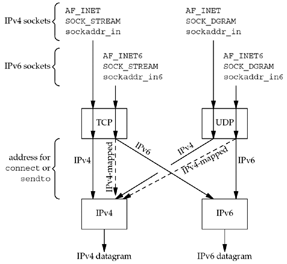
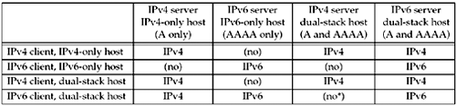

| [ Team LiB ] |
|
12.3 IPv6 Client, IPv4 ServerWe now swap the protocols used by the client and server from the example in the previous section. First consider an IPv6 TCP client running on a dual-stack host.
We can summarize this scenario in Figure 12.4. Figure 12.4. Processing of client requests, depending on address type and socket type.
In the previous section (an IPv4 datagram arriving for an IPv6 server socket), the conversion of the received address to the IPv4-mapped IPv6 address is done by the kernel and returned transparently to the application by accept or recvfrom. In this section (an IPv4 datagram needing to be sent on an IPv6 socket), the conversion of the IPv4 address to the IPv4-mapped IPv6 address is done by the resolver according to the rules in Figure 11.8, and the mapped address is then passed transparently by the application to connect or sendto. Summary of InteroperabilityFigure 12.5 summarizes this section and the previous section, plus the combinations of clients and servers. Figure 12.5. Summary of interoperability between IPv4 and IPv6 clients and servers. Each box contains "IPv4" or "IPv6" if the combination is okay, indicating which protocol is used, or "(no)" if the combination is invalid. The third column on the final row is marked with an asterisk because interoperability depends on the address chosen by the client. Choosing the AAAA record and sending an IPv6 datagram will not work. But choosing the A record, which is returned to the client as an IPv4-mapped IPv6 address, causes an IPv4 datagram to be sent, which will work. By looping through all adresses that getaddrinfo returns, as shown in Figure 11.4, we can ensure that we will (perhaps after some timeouts) try the IPv4-mapped IPv6 address. Although it appears that five entries in the table will not interoperate, in the real world for the foreseeable future, most implementations of IPv6 will be on dual-stack hosts and will not be IPv6-only implementations. If we therefore remove the second row and the second column, all of the "(no)" entries disappear and the only problem is the entry with the asterisk. |
| [ Team LiB ] |
|